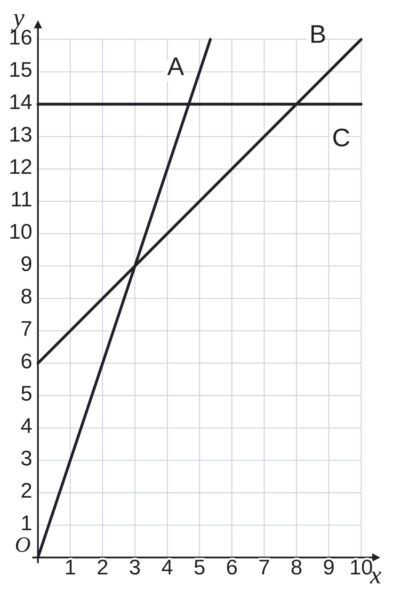
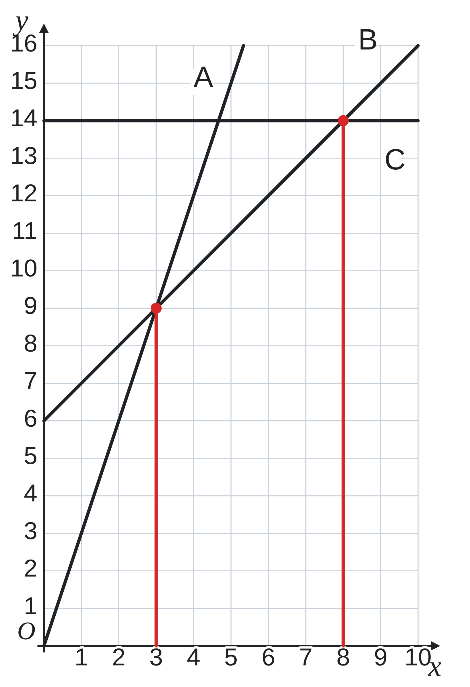
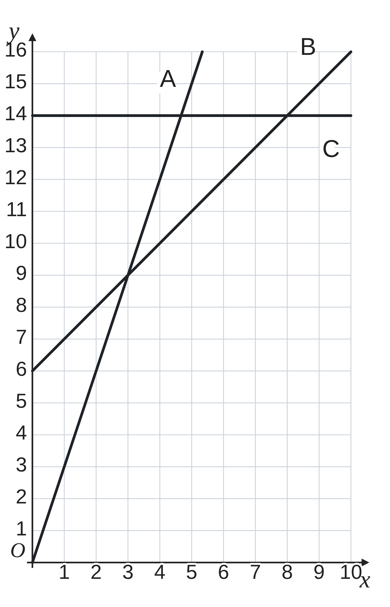

ペア学習
第15時 3つの料金プランを、グラフでくらべよう
第14時の重要語句から、1人1問ずつ、言葉を選んで出題する。
聞かれた人は、その言葉の意味を、自分の言葉で言う。
一次関数とみなす
予測
一次関数 第15時 3つの料金プランを、グラフでくらべよう
めあて
第15時 3つの料金プランを、グラフでくらべよう
学習課題
市民プールには、3つの料金プランがある。
1か月に x回利用したときの料金を y円とする。
A … 1回ごとに 300円
B … 月会費 600円と、1回ごとに 100円
C … 月会費 1400円で、何回でも利用できる。
右の図は、A、B、C のグラフ（縦の 1目もりは 100円）。
どのプランが得か、調べよう。

【式】A、B、C の式を書こう。 【グラフから】回数ごとに、いちばん安いプランは？
一次関数 第15時 3つの料金プランを、グラフでくらべよう
学習課題のまとめ
第15時 3つの料金プランを、グラフでくらべよう
3つのプランの式と、回数ごとに、いちばん安いプラン。
【式】
A y＝300x
B y＝100x+600
C y＝1400
【グラフから】
A と B の交点は x＝3、B と C の交点は x＝8
グラフがいちばん下のプランが安い
1・2回 … A 3回 … A と B が同じ
4〜7回 … B 8回 … B と C が同じ
9回以上 … C
（交点は 300x＝100x+600 を解いても x＝3 と求められる）

一次関数 第15時 3つの料金プランを、グラフでくらべよう
ことば
第15時 3つの料金プランを、グラフでくらべよう
料金のグラフでは、
グラフが にあるプランほど、料金が安い。
2つのグラフの では、
2つのプランの料金が になる。
交点の x 座標は、
2つの式を として解いても求められる。
一次関数 第15時 3つの料金プランを、グラフでくらべよう
ことば
第15時 3つの料金プランを、グラフでくらべよう
料金のグラフでは、
グラフが下にあるプランほど、料金が安い。
2つのグラフの交点では、
2つのプランの料金が同じになる。
交点の x 座標は、
2つの式を連立方程式として解いても求められる。
一次関数 第15時 3つの料金プランを、グラフでくらべよう
例題
第15時 3つの料金プランを、グラフでくらべよう
ゆうきさんは、1か月に 回、 回、 回、このプールを利用する月がある。
それぞれの月は、どのプランが得だろう。式で料金を求めて、表にまとめよう。
| 利用する回数 | 2回 | 5回 | 10回 |
|---|---|---|---|
| A y＝300x | |||
| B y＝100x+600 | |||
| C y＝1400 | 1400 | 1400 | 1400 |
| いちばん安いプラン |
一次関数 第15時 3つの料金プランを、グラフでくらべよう
例題 解答
第15時 3つの料金プランを、グラフでくらべよう
| 利用する回数 | 2回 | 5回 | 10回 |
|---|---|---|---|
| A y＝300x | 600 | 1500 | 3000 |
| B y＝100x+600 | 800 | 1100 | 1600 |
| C y＝1400 | 1400 | 1400 | 1400 |
| いちばん安いプラン | A | B | C |
どの月も、グラフでいちばん下の線のプランと、同じになった。
料金 2回 A 600円 5回 B 1100円 10回 C 1400円
一次関数 第15時 3つの料金プランを、グラフでくらべよう
考えよう
第15時 3つの料金プランを、グラフでくらべよう
①
B の新しい式を書き、グラフを右の図にかこう。
②
グラフを見て、B がいちばん安い回数は、
どう変わるか予想しよう。わけも書こう。
③
式や表を使って、B がいちばん安い回数を、確かめよう。
発展
演習まで解き終わった人は、考えてみよう！ C の月会費が、1400円から 1200円に下がったら、B がいちばん安い回数は、どう変わるだろう。

一次関数 第15時 3つの料金プランを、グラフでくらべよう
振り返り
第15時 3つの料金プランを、グラフでくらべよう
今日のめあて
グラフの上下
交点
連立方程式で交点を求める
今日わかったことを、ペアで1つずつ言い合おう。
ワークシートと演習プリントを出そう。（未完成でも出す）
一次関数 第15時 3つの料金プランを、グラフでくらべよう